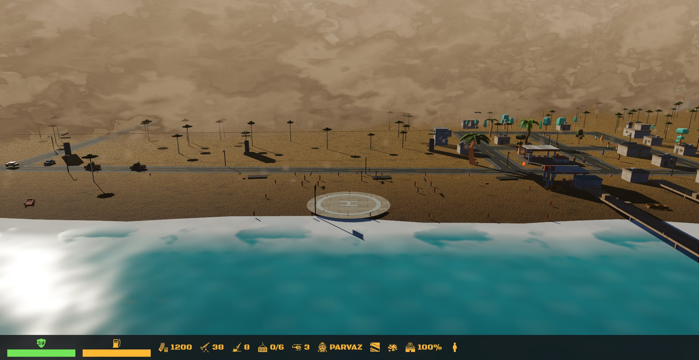
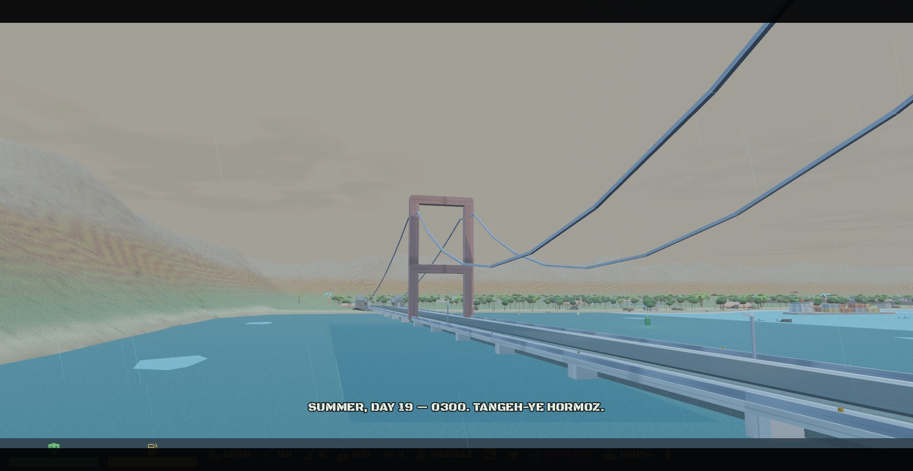
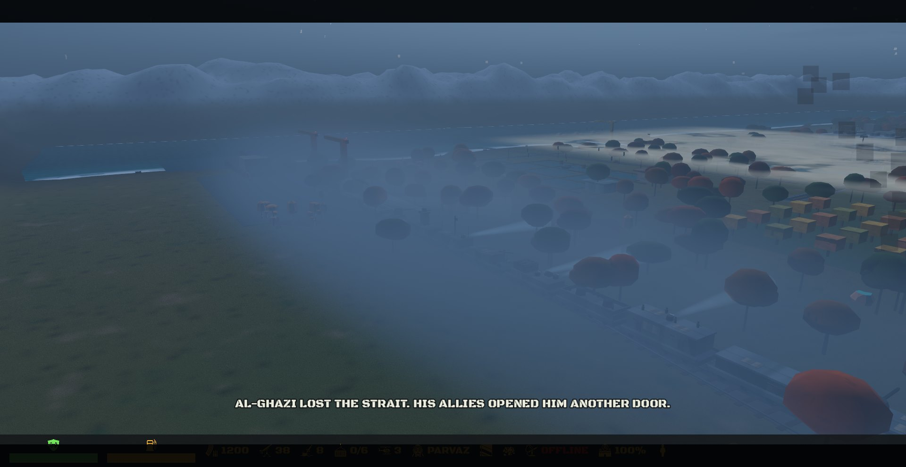
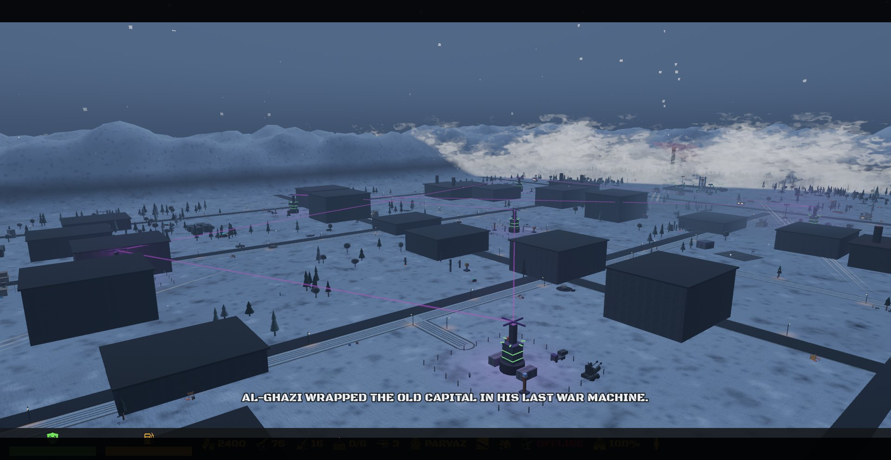

One stolen gunship against the regime that trained us.
A rotary-wing strike war in the 16-bit tradition, crossed with a base you found, feed, and defend — flown from one cockpit.
Every campaign begins in-engine, in real weather, on the real map you are about to fight over. These are the actual opening cutscenes — captured from the game, not rendered for the trailer.
Every operation has its own aircraft, weather, economy, soundtrack, and front line. Spring to winter — the coast, the strait, the north, and the last push on the capital.

Defect, survive, and raise a beachhead from the first winched crate. Haboob walls march on the wind while workers stack your base block by block.

Two armies, one causeway, and a tide that opens and closes the war. Thunderheads roll in off the gulf and the drone swarm hunts anything that moves.

Copper forest, fog seas, a battle train on the coast line. Fight the relay war for the northern sky while the stronghold holds — or doesn't — behind you.

The Marshal wrapped the old capital in his last war machine. Four coalition contingents, a ground blizzard, and a countdown. Its opening stays classified — some things you earn.
Desert Strike's cockpit welded to a Command & Conquer economy — and the helicopter is the only cursor you get.
You never order a unit. You deliver the war: sling-load the crew, the blocks, the guns. Once a building stands, its production runs itself.
Drop a tarp of loose blocks and a work crew, and watch the building physically go up. Barracks replace their own dead. Every wall you raise was flown in by you.
Kilometer-wide dust walls on a live wind field. Gulf thunderstorms that surge the tide. Fog seas, ground blizzards, flash floods down the wadi. None of it is a skybox.
Calm mornings flatten to glass and mirror your rotors; fronts stand the swell up and rip spray off the wave tops. The sea stops bullets, floats the fleet, and obeys the tide.
Every building, bridge, tower, truck, and telegraph pole is destructible — and the regime hides caches and ambushers in the rubble. Demolition is a gamble worth taking.
The soundtrack is smuggled in crate by crate — banned music for a banned squadron. Choose your tunes. Fly the mission. Bring the tape home.
Direct captures from campaign cinematics and vantage flights. Click any frame for the full image.
PERSIAN STRIKE: RETRIBUTION is in active development. Follow the repository for updates — the campaign log is written in the commits.